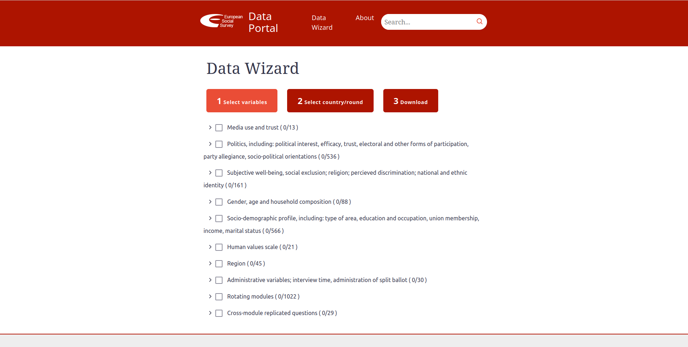
8 Scraping JavaScript based website
Even with all the techniques we’ve covered in this book, some websites can’t be scraped in the traditional way. What does this mean? Some websites have their content hidden behind JavaScript code that can’t be seen by simply reading the HTML code. These website are built for interactivity, meaning that some parts will only be revealed when you interact with it. When you read the HTML of that website, you won’t be able to see the data that you want. As usual, let’s motivate this chapter with an example.
The European Social Survey (ESS) is an academically driven cross-national survey that has been conducted across Europe since its establishment in 2001. Every two years, face-to-face interviews are conducted with newly selected, cross-sectional samples. The survey measures the attitudes, beliefs and behavior patterns of diverse populations in more than thirty nations. In their website they have a ‘Data Portal’ that allows you to pick variables they asked in their questionnaire, pick the country/years of data you want and download that custom data set for yourself. You can find the data portal here. This is how it looks like:
With the developer’s tools (CTRL-SHIT-C), we can see the HTML code behind the website. Let’s say that you want to extract all variable names associated with a category of questions. Under ‘Media use and trust’ there are several question names and labels that belong to that category:
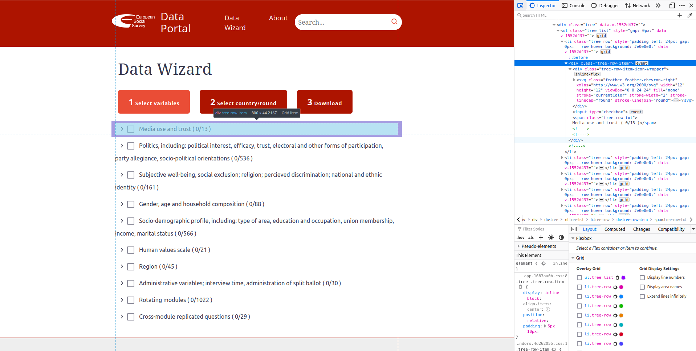
However, unless you click on the drop down menu, those questions won’t be displayed on the source code of the website. That is, if right now you spent 10 minutes searching the source code from the developer’s tools on the right, you won’t find the names of those variables anywhere:
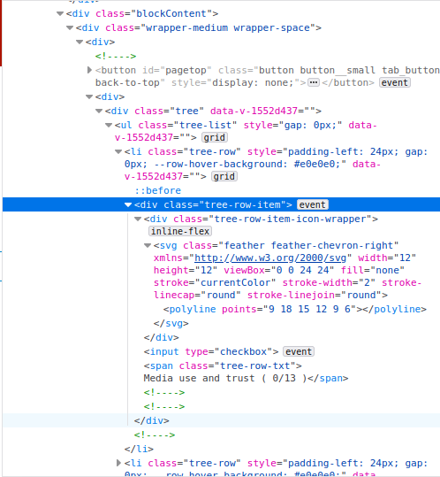
Those variable names won’t be found anywhere. You might think, well that’s easy to solve: I’ll click on the drop down menu and use the new generated link (with all data displayed) to read it with read_html. The issue is that the URL of the website will be the same whether you click or not the drop down menu:
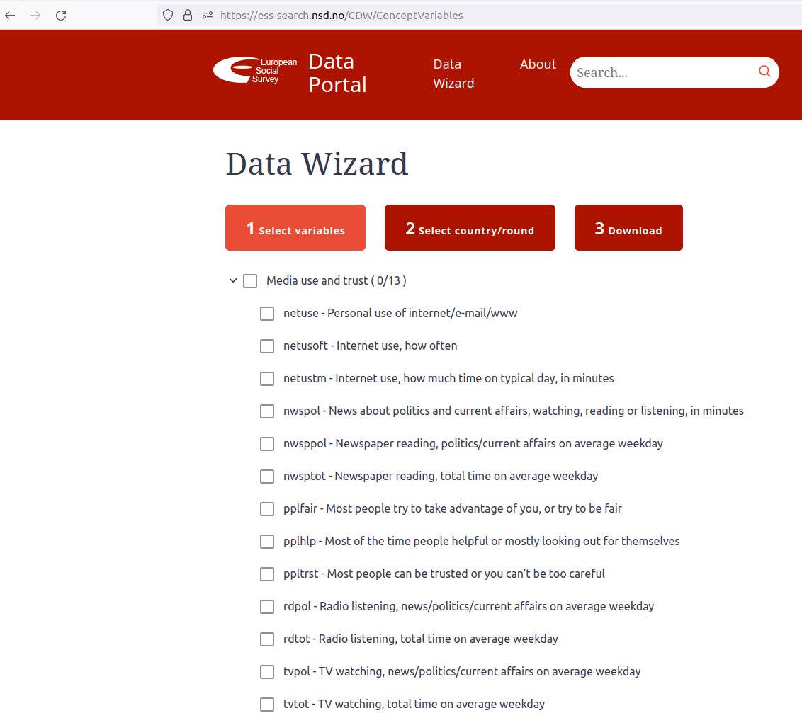
Same URL, despite that I clicked on ‘Media use and trust’ and all variable names are displayed. This means that whenever you use read_html on that link, the variable labels won’t be displayed and you won’t be able to gather that data. That’s the motivation behind Selenium. It’s objective is to be able to scrape websites that are dynamic and interactive and are impossible to do so using traditional URLs and the source.
8.1 Introduction to RSelenium
Selenium is a software program that you use to ‘mimic’ a human. Yes, that’s right. All Selenium does is literally open a browser and click on parts of the page as if you were a human. Once you’ve clicked on certain parts of the website, you can use your knowledge on XPath, HTML and xml2 to extract the data you need.
The example we’ll use for this chapter is the blog of the statistician Andrew Gelman. According to Rohan Alexander:
Gelman’s blog—Statistical Modeling, Causal Inference, and Social Science—launched in 2004—is the go-to place for a fun mix of somewhat-nerdy statistics-focused content. The very first post promised to ‘…report on recent research and ongoing half-baked ideas, including … Bayesian statistics, multilevel modeling, causal inference, and political science.’ 17 years on, the site has very much kept its promise.
We’ll use this blog to explore the topics that have been discussed in the world of statistics over the last 17 years. This website does not need to be scraped using Selenium and can be scraped by just reading the HTML code. However, websites which do need to use Selenium can’t be saved locally and are doomed to change over time, which entails a risk of making this chapter unusable in the future. For that reason we are going to perform all our scraping using a traditional example but highlighting it as if it were a JavaScript based website.
Let’s load the packages we’ll use and our example:
library(RSelenium)
library(scrapex)
library(xml2)
library(magrittr)
library(lubridate)
library(dplyr)
library(tidyr)
blog_link <- gelman_blog_ex()As described before, Selenium tries to mimic a human. This literally means that we need to open a browser. In RSelenium we do that with the rsDriver function. This function initializes the browser and opens it for us:
remDr <- rsDriver(port = 4445L)## checking Selenium Server versions:
## BEGIN: PREDOWNLOAD
## BEGIN: DOWNLOAD
## BEGIN: POSTDOWNLOAD
## checking chromedriver versions:
## BEGIN: PREDOWNLOAD
## BEGIN: DOWNLOAD
## BEGIN: POSTDOWNLOAD
## checking geckodriver versions:
## BEGIN: PREDOWNLOAD
## BEGIN: DOWNLOAD
## BEGIN: POSTDOWNLOAD
## checking phantomjs versions:
## BEGIN: PREDOWNLOAD
## BEGIN: DOWNLOAD
## BEGIN: POSTDOWNLOAD
## [1] "Connecting to remote server"
## $acceptInsecureCerts
## [1] FALSE
## $browserName
## [1] "firefox"
## $browserVersion
## [1] "106.0"
## $`moz:accessibilityChecks`
## [1] FALSE
## $`moz:buildID`
## [1] "20221010110315"
## $`moz:geckodriverVersion`
## [1] "0.32.0"
## $`moz:headless`
## [1] FALSE
## $`moz:platformVersion`
## [1] "5.4.0-39-generic"
## $`moz:processID`
## [1] 271886
## $`moz:profile`
## [1] "/tmp/rust_mozprofile5ANm8J"
## $`moz:shutdownTimeout`
## [1] 60000
## $`moz:useNonSpecCompliantPointerOrigin`
## [1] FALSE
## $`moz:webdriverClick`
## [1] TRUE
## $`moz:windowless`
## [1] FALSE
## $pageLoadStrategy
## [1] "normal"
## $platformName
## [1] "linux"
## $proxy
## named list()
## $setWindowRect
## [1] TRUE
## $strictFileInteractability
## [1] FALSE
## $timeouts
## $timeouts$implicit
## [1] 0
## $timeouts$pageLoad
## [1] 300000
## $timeouts$script
## [1] 30000
## $unhandledPromptBehavior
## [1] "dismiss and notify"
## $webdriver.remote.sessionid
## [1] "a3585bf8-9c4a-462e-a74d-b9d6b35daff7"
## $id
## [1] "a3585bf8-9c4a-462e-a74d-b9d6b35daff7"After the last line that starts withBEGIN we’ll see all the options from our browser. For example, the browserName and the browserVersion. The important thing here is that, aside from this output, you should see a browser that opened in your computer completely empty:
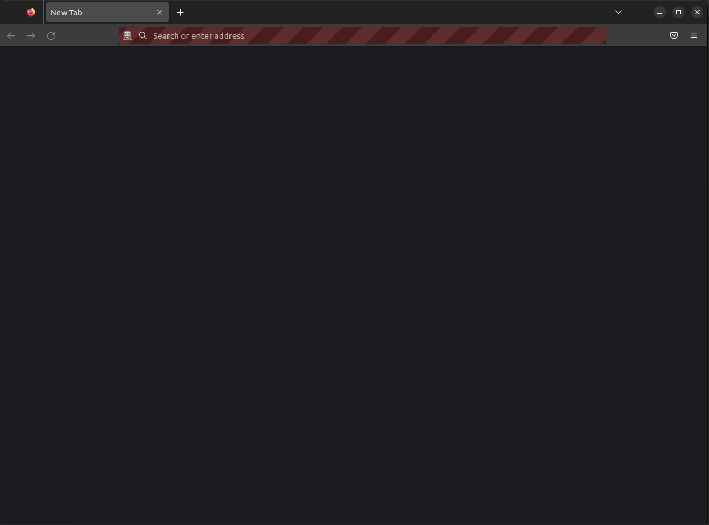
RSelenium opened a browser which you don’t need to touch. Everything you do on this browser will be performed using the object remDr, where the browser was initiated. remDr has a property called client from where you can navigate to a website. Let’s open Andrew Gelman’s blog on this browser:
remDr$client$navigate(prep_browser(blog_link))Have a look at the browser and you should see the blog opened there:
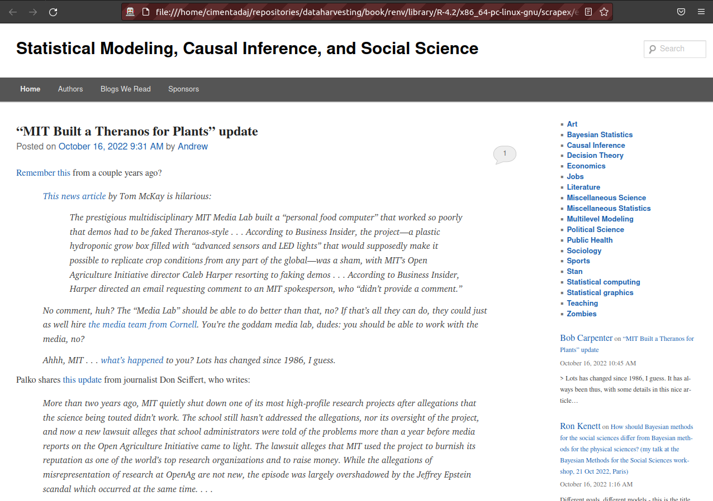
The most effective way to navigate in RSelenium is to use XPath to find parts of the website that you want perform an action and then use some of the methods to click, send or submit something on the website. For example, suppose we wanted to perform some natural language processing on all posts over the last 17 years of blog posts. The first we’d like to do is to click on the blog post name and extract all the text.
8.3 Bringing the source code
With the HTML code as a string, we’re on familiar ground. We can use read_html to read it.
html_code <-
page_source %>%
read_html()Let’s assume we want to find all categories that are associated with this post. The categories are in the bottom of the post:
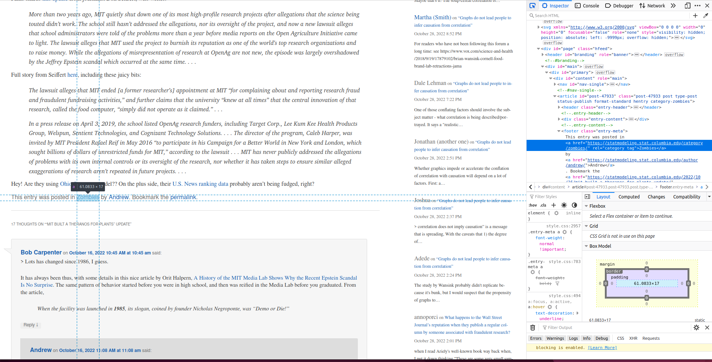
You’ll see on the right that the categories of each post are under a <footer> tag that has a class entry-meta. The actual categories are in a <a> tag that has an href attribute with the word category. We can build an XPath to extract it like this:
//in the entire document- Find the footer tag with a class entry-meta:
footer[@class='entry-meta'] - And below it
// - Find all a tags that contain the word category:
a[contains(@href, 'category')]
Let’s extract the categories using this XPath:
categories_first_post <-
html_code %>%
xml_find_all("//footer[@class='entry-meta']//a[contains(@href, 'category')]") %>%
xml_text()
categories_first_post## [1] "Zombies"This post was about Zombies. Let’s also extract the date in order to have a time stamp of which categories are used over time:
entry_date <-
html_code %>%
xml_find_all("//time[@class='entry-date']") %>%
xml_text() %>%
parse_date_time("%B %d, %Y %I:%M %p")
entry_date## [1] "2022-10-16 09:31:00"Note of the use of parse_date_time and the time format (all the % symbols) to convert the string of date/time into R. With that information we can create a clean data frame of entry dates with their respective categories in a list column:
final_res <- tibble(entry_date = entry_date, categories = list(categories_first_post))
final_res## # A tibble: 1 × 2
## entry_date categories
## <dttm> <list>
## 1 2022-10-16 09:31:00 <chr [1]>Great, we have all our information clean and ready to recycle all of our code into a function and loop it over each of the blog posts. Before we do that, we need to do one final thing: go back to the main page of the blog. Don’t forget that the browser is still open and whatever new moves you make using our browser will be starting from where you left it off. Luckily, RSelenium makes it very simple: the goBack attribute. Let’s go back:
driver$goBack()Your browser should now be back at the main page:
8.4 Scaling RSelenium to many websites
With that ready, we can move all our code into a function and loop it over all blog posts in this page:
collect_categories <- function(page_source) {
# Read source code of blog post
html_code <-
page_source %>%
read_html()
# Extract categories
categories_first_post <-
html_code %>%
xml_find_all("//footer[@class='entry-meta']//a[contains(@href, 'category')]") %>%
xml_text()
# Extract entry date
entry_date <-
html_code %>%
xml_find_all("//time[@class='entry-date']") %>%
xml_text() %>%
parse_date_time("%B %d, %Y %I:%M %p")
# Collect everything in a data frame
final_res <- tibble(entry_date = entry_date, categories = list(categories_first_post))
final_res
}
# Get all number of blog posts on this page
num_blogs <-
blog_link %>%
read_html() %>%
xml_find_all("//h1[@class='entry-title']//a") %>%
length()
blog_posts <- list()
# Loop over each post, extract the categories and go back to the main page
for (i in seq_len(num_blogs)) {
print(i)
# Go to the next blog post
xpath <- paste0("(//h1[@class='entry-title']//a)[", i, "]")
Sys.sleep(2)
driver$findElement(value = xpath)$clickElement()
# Get the source code
page_source <- driver$getPageSource()[[1]]
# Grab all categories
blog_posts[[i]] <- collect_categories(page_source)
# Go back to the main page before next iteration
driver$goBack()
}While your code runs, open the browser and enjoy the show. Your browser will start working it self as if a ghost were scrolling down and clicking on each blog post. When it finishes, we’ll have a list of all categories in the last 20 blog posts. Let’s combine those and get a count of the most used categories:
combined_df <- bind_rows(blog_posts)
combined_df %>%
unnest(categories) %>%
count(categories) %>%
arrange(-n)## # A tibble: 16 × 2
## categories n
## <chr> <int>
## 1 Bayesian Statistics 7
## 2 Zombies 7
## 3 Miscellaneous Statistics 5
## 4 Political Science 5
## 5 Teaching 5
## 6 Sociology 4
## 7 Statistical computing 4
## 8 Causal Inference 3
## 9 Economics 3
## 10 Sports 3
## 11 Miscellaneous Science 2
## 12 Stan 2
## 13 Art 1
## 14 Decision Theory 1
## 15 Jobs 1
## 16 Public Health 18.5 Filling out forms
RSelenium allows you to do much more than just click on links; pretty much anything you can do on a browser you can do on RSelenium. Have a look at some of the methods we have in our driver:
driver$Navigate("http://somewhere.com")
driver$goBack()
driver$goForward()
driver$refresh()
driver$getTitle()
driver$getCurrentUrl()
driver$getStatus()
driver$screenshot(display = TRUE)
driver$getAllCookies()
driver$deleteCookieNamed("PREF")
driver$switchToFrame("string|number|null|WebElement")
driver$getWindowHandles()
driver$getCurrentWindowHandle()
driver$switchToWindow("windowId")You can do all sorts of things like taking a screenshot of the website, grabbing the URL, delete cookies and so much more. We can’t cover everything that RSelenium can do but we can focus on the most common ones.
One common thing you’ll also want to do is to learn how to fill out a form. It’s common for a website to ask you information before showing you a website or fill out a search bar (like in any eCommerce website such as Amazon) to obtain results. For these tasks you have to manually type content into a form-like box.
Our blog example contains one nice example we can recycle for filling out forms. Whenever you want to post a comment on the blog’s posts you need to fill out a form with the comment text, the author name, email and author’s website before you’re allowed to publish. To see this, we need to go into a blog post and scroll down. Let’s go to the first post:
driver$findElement(value = "(//h1[@class='entry-title']//a)[1]")$clickElement()And scroll down see the comments section:
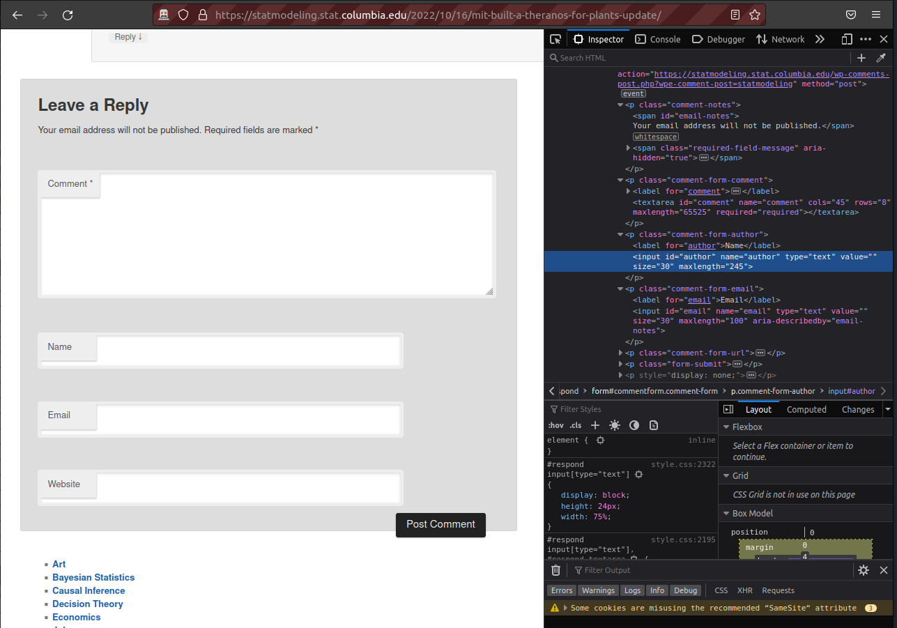
On the left you’ll see the form. Each of those text areas has a corresponding tag on the right. The one for the author form has been highlighted on the right. You’ll see that the id attribute is author. Similarly, if you see a tiny bit below, the email input has the id set to email. Using our traditional XPath syntax we can probably navigate the browser to that specific tag. However, RSelenium has some nice tricks that can make it even easier for us. findElement assumes that you’ll be using XPath, as we did previously, but it also allows to specify certain attributes without using XPath. If we wanted to go the tag that has an id set to author, we could do it like this:
driver$findElement(using = "id", "author")RSelenium also supports other attributes such as ‘name’, ‘tag name’, ‘class name’, ‘link text’ and even ‘partial link text’. The code above will leave us at the author form. Here we could use something like $clickElement() but we want to input text. For that we use $sendKeysToElement() which sends the text you provide inside the () as input:
driver$findElement(using = "id", "author")$sendKeysToElement(list("Data Harvesting Bot"))If you look at your browser you’ll see that the author form is now filled with “Data Harvesting Bot”:
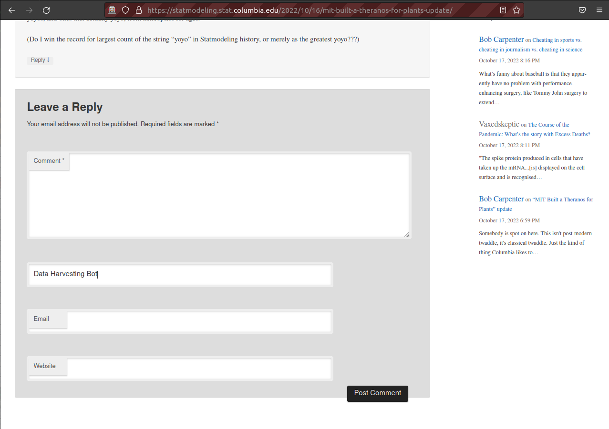
We can do the same thing for the email id:
driver$findElement(using = "id", "email")$sendKeysToElement(list("fake-email@gmail.com"))And find that the email form has been filled:
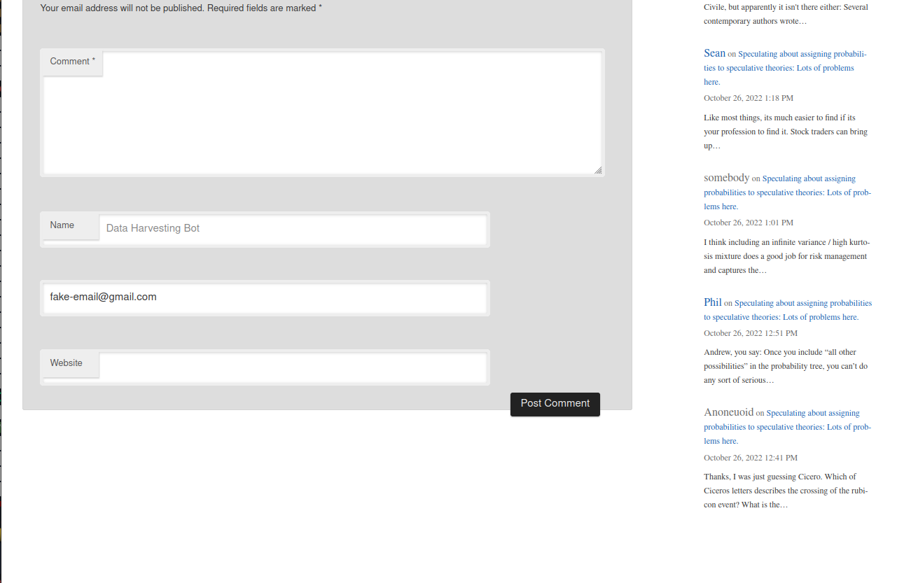
At this point, we need to fill out the text of the comment but we don’t want to actually send a comment to the website. Instead, I’ll show you how to click on the ‘Post Comment’ button (since we haven’t provided the comment text, clicking on the post comment button won’t publish the comment). The id tag of the submit button is set to submit on the source code so we can click it with:
driver$findElement(using = "id", "submit")$clickElement()The post won’t be published, instead you’ll see a pop up saying “Please fill out this field”, saying you need to provide a comment to the post behind publishing it:
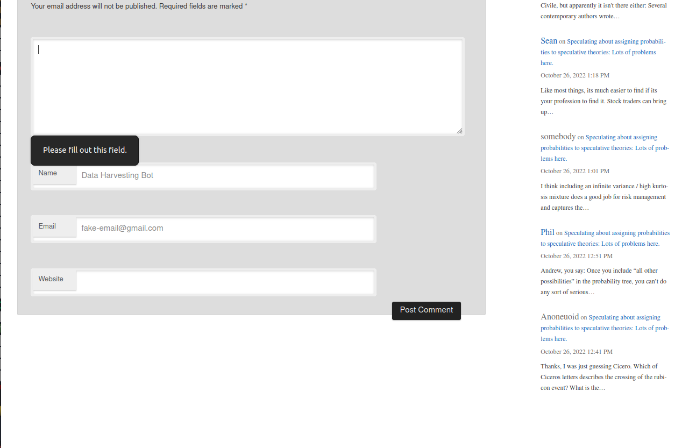
This is just an example on how to fill out text forms and click on them. This should only be done when you scrape all posts locally into scrapex (which might not be possible).
8.6 Summary
We could find all sorts of examples that extract data using RSelenium but nearly all your scraping needs will be solved by combining some of the functions we’ve used above. Here is a summary of the tools we’ve covered and that you’ll need for most of your Selenium scraping.
- Connect and open a browser
remDr <- rsDriver(port = 4445L)
driver <- remDr$client- Navigate to a website, refresh it and go back to the previous website:
driver$navigate("somewebsite.com")
driver$refresh()
driver$goBack()- Find a part of a website using XPath and click on it:
# With XPath
driver$findElement(value = "(//h1[@class='entry-title']//a)[1]")$clickElement()
# Or attribute=value instead of XPath
driver$findElement(using = "id", "submit")$clickElement()- Extract HTML source of the current website
driver$getPageSource()[[1]]- Fill text at point
# With XPath
driver$findElement(value = "(//h1[@class='entry-title']//a)[1]")$sendKeysToElement(list("Data Harvesting Bot"))
# With attribut=value
driver$findElement(using = "id", "author")$sendKeysToElement(list("Data Harvesting Bot"))- Close browser and server
driver$close()
remDr$server$stop()8.7 Exercises
- Building on our ‘extract categories of posts’ example, extend it to extract all blog posts of the last 20 pages of blog posts. You’ll need to click ‘Older posts’ to see the previous page of blog posts:
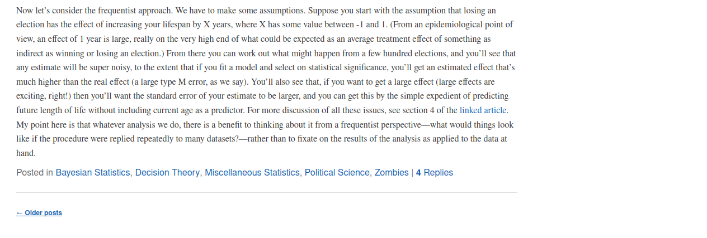
Has the use of images grown over time in the blog? It’s up to you to decide how many posts in the past you want to go back. Hint: count the number of
<img>tags for each post.Gelman is a big proponent of using Bayesian methods over Frequentist methods in statistics. Can you plot the frequency usage of the word “Bayesian” over time? Is there a peak moment in the history of the blog?